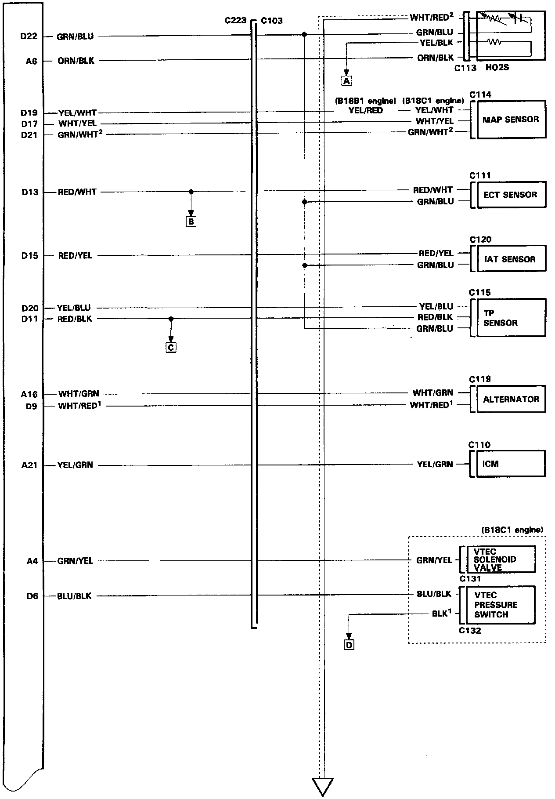
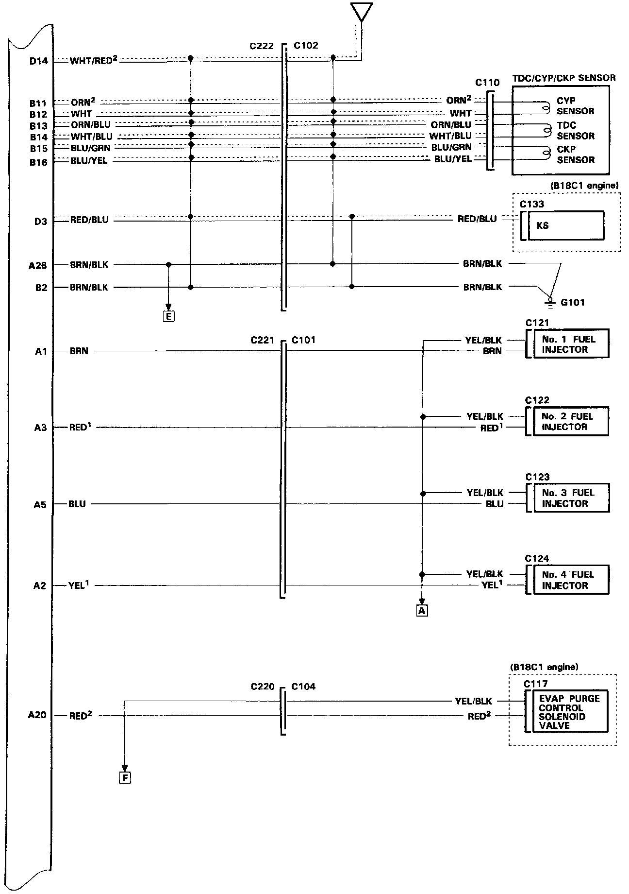
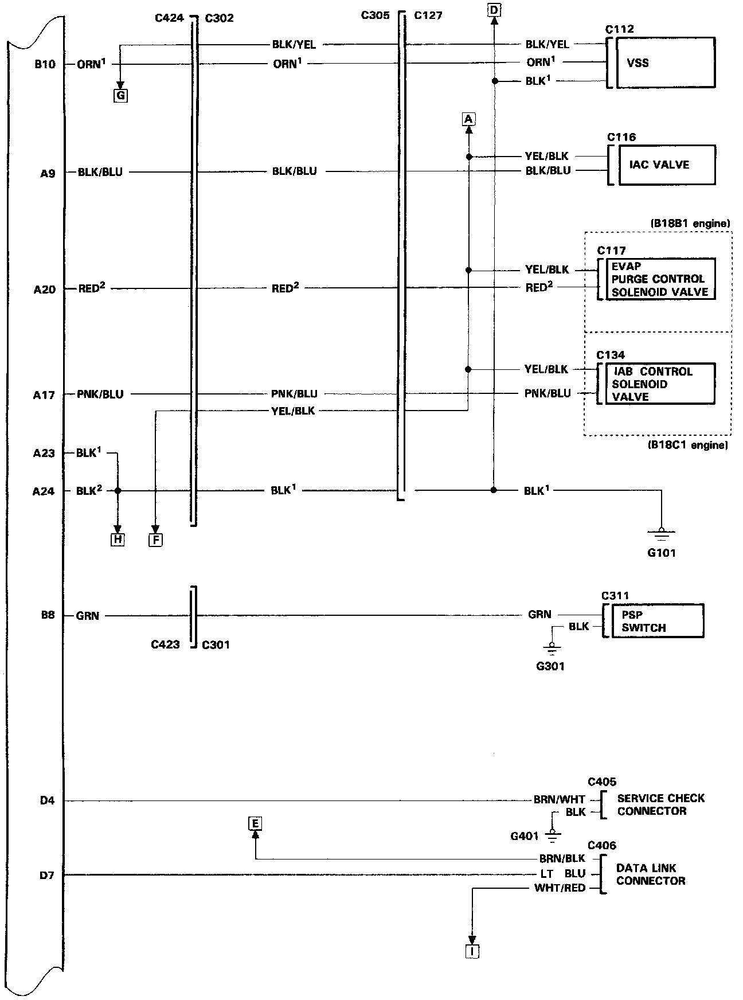
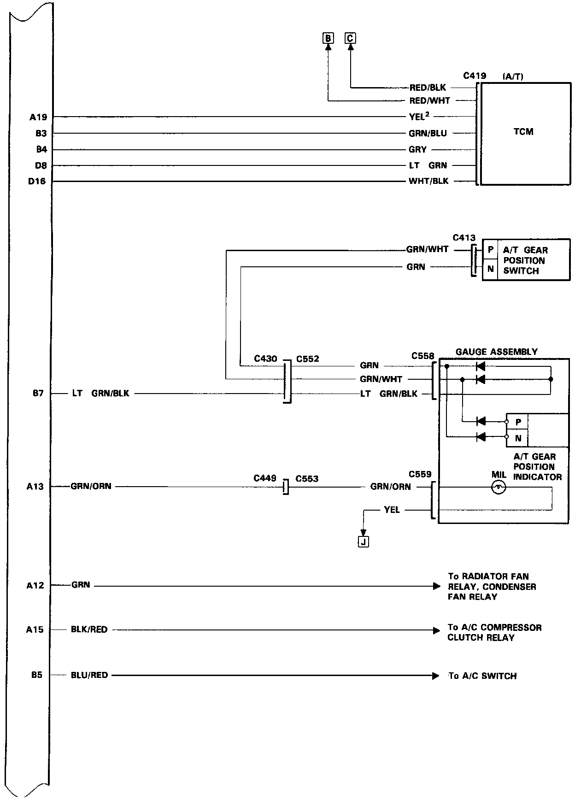
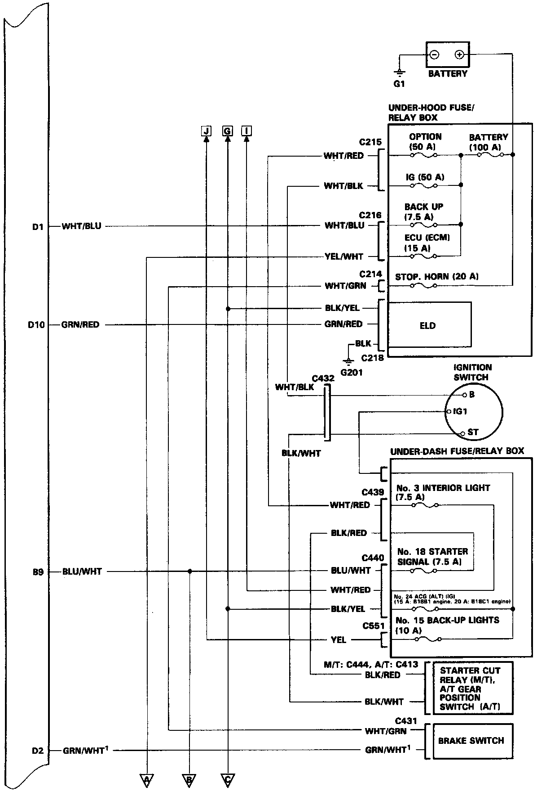
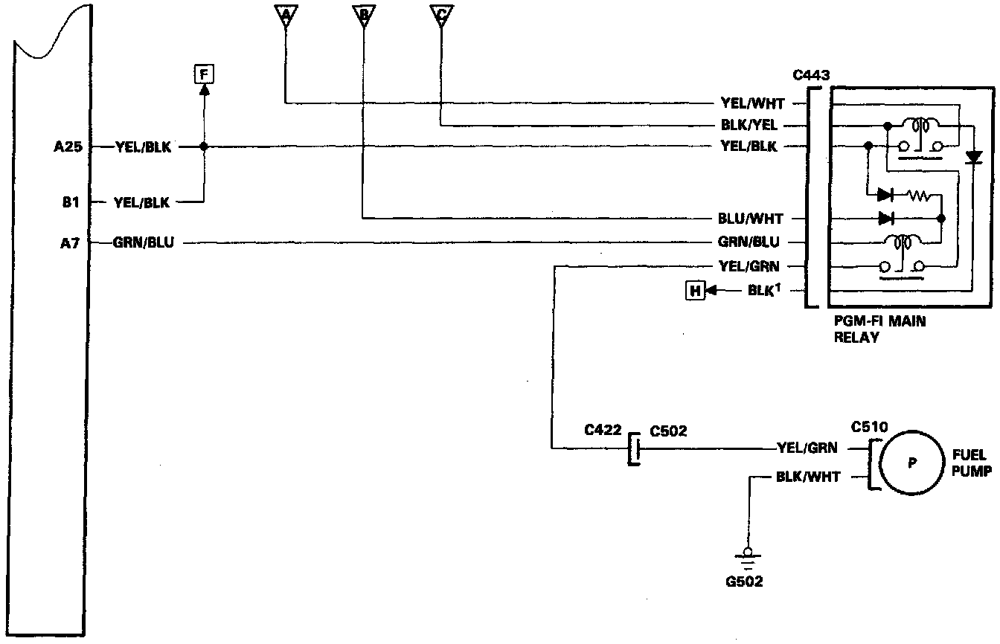

System Diagram
ECM Wiring Diagram (1 Of 6):

ECM Wiring Diagram (2 Of 6):

ECM Wiring Diagram (3 Of 6):

ECM Wiring Diagram (4 Of 6):

ECM Wiring Diagram (5 Of 6):

ECM Wiring Diagram (6 Of 6):
